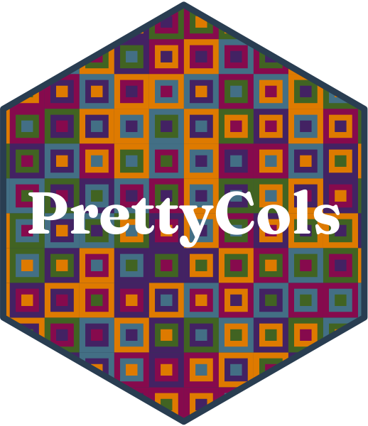

Plotting with PrettyCols palettes for colour ggplot2
Source:R/scale_color_pretty_div.R
scale_color_pretty_div.RdPlotting with PrettyCols palettes for colour ggplot2
Arguments
- palette
Name of Palette. Run
view_all_palettes(type = "div")to view options. Must be a diverging palette name.- direction
Sets order of colors. Default palette is 1. If direction is -1, palette color order is reversed
- legend_title
![[Deprecated]](figures/lifecycle-deprecated.svg) Deprecated in favour of
Deprecated in favour of name.- ...
Other arguments passed on to
scale_colour_gradient2